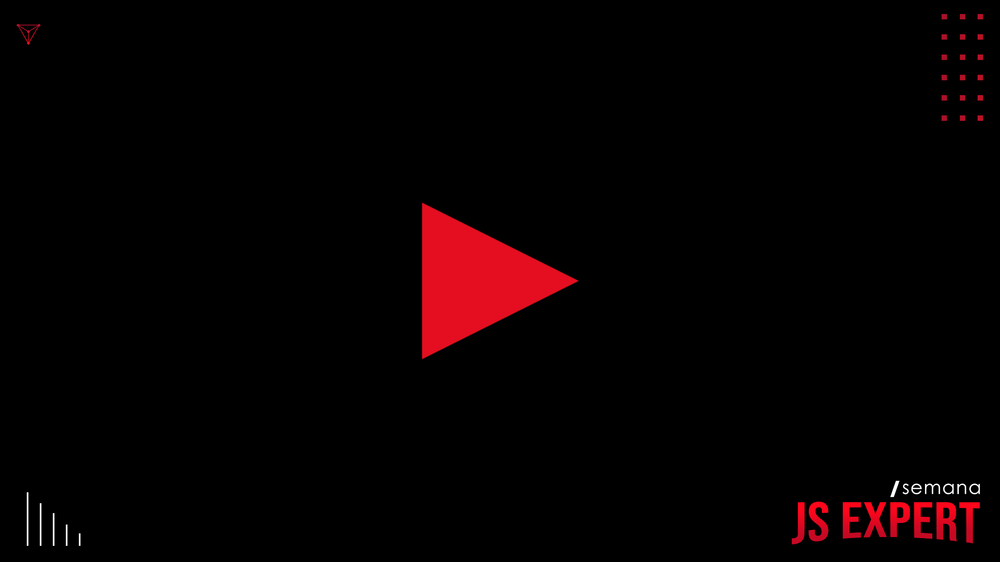

Experiência Interativa em Vídeo
Neste projeto foi reproduzida as tecnologias utilizadas pela Netflix no filme interativo Black Mirror: Bandersnatch, do desenvolvimento de um player de vídeo moderno e customizado usando video.js com base no layout da Netflix até como ler pedaços de vídeo sob demanda de acordo com a escolha do usuário, desenvolvendo assim a lógica para criar uma experiência de vídeo interativo similar ao da Netflix.
Clique na imagem para abrir o player de vídeo e ter a experiência completa.